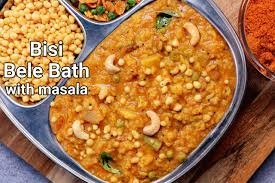
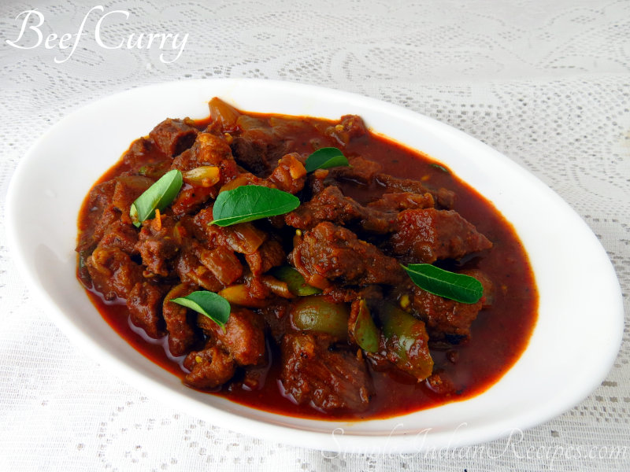

Idly
Idli or idly is a type of savoury rice cake, originating from South India, popular as a breakfast food in Southern India and in Sri Lanka. The cakes are made by steaming a batter consisting of fermented black lentils (de-husked) and rice. The fermentation process breaks down the starches so that they are more readily metabolised by the body.Idli has several variations, including rava idli, which is made from semolina.

Bisi Bela Bath

Bisi bele bhath:'hot lentil [boiled] rice' or bisi bele huliyanna is a spicy, rice-based dish with origins in the state of Karnataka, India. It is said to have originated in the Mysore Palace and it took 100 years for the dish to come out from the place and another 200 years to spread across the state of Karnataka.
Pesarattu
Pesarattu, pesara attu, pesara dosa (mung bean dosa), or cheeldo is a crepe-like bread, originating in Andhra Pradesh, India, that is a variety of dosa. It is made with green gram (moong dal) batter, but, unlike a typical dosa, it does not contain urad dal. Pesarattu is eaten as breakfast and as a snack in Andhra Pradesh. It is typically served with ginger chutney or peanut chutney or tamarind chutney. Green chilies, ginger and onions are used in variants.

Kerala Beefcurry

Kerala beef fry is a dish made of beef, slow-roasted in a mixture of spices, onions, curry leaves, and coconut slivers, fried in coconut oil. The dish is also popularly known in Kerala as "Beef Ullarthiyathu".The dish is prepared by cooking chunks of meat in a mixture of spices which include turmeric, coriander, garam masala, black pepper, red chilli, cooked along with onions, shallots, ginger and garlic. Slivers of coconut, fried in coconut oil and curry leaves are also used for garnish. The meat is usually cooked in a pressure cooker to soften it before it is slow roasted in the mixture of spices, till it reaches a dry consistency